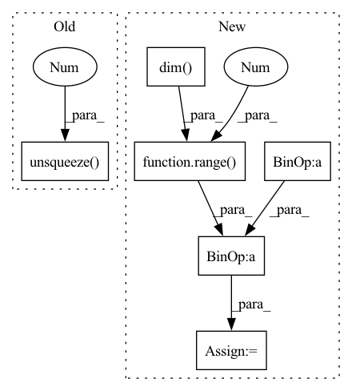

Pattern ID :23972

Before Change
if log_det.dim() == 0:
log_det = log_det.unsqueeze(0)
if log_det.dim() == 1:
log_det = log_det.unsqueeze(1)
return z_, log_det
After Change
u = self.u + (torch.log(1 + torch.exp(inner)) - 1 - inner) \
* self.w / torch.sum(self.w ** 2)
dims = [-1] + (u.dim() - 1) * [1]
u = a.reshape(*dims) * u
inner_ = torch.sum(self.w * u, list(range(1, self.w.dim())))
z_ = z - u * (lin / (1 + inner_)).reshape(*dims)
log_det = -torch.log(torch.abs(1 + inner_))
return z_, log_det
In pattern: SUPERPATTERN
Frequency: 3
Non-data size: 6
Instances
Fragment ID: 74532336
Project Name: vincentstimper/normalizing-flows
Commit Name: a889154fde455dbf8adddd8da2f0b786a0fe0d8e
Time: 2022-11-09
Author: vincent.stimper@gmail.com
File Name: normflows/flows/planar.py
M Class Name: Planar
N Class Name: Planar
M Method Name: inverse(2)
N Method Name: inverse(2)
M Parent Class: Flow
N Parent Class: Flow
M File Name: normflows/flows/planar.py
N File Name: normflows/flows/planar.py
M Start Line: 75
M End Line: 92
N Start Line: 68
N End Line: 79
'>
Before Change
if log_det.dim() == 0:
log_det = log_det.unsqueeze(0)
if log_det.dim() == 1:
log_det = log_det.unsqueeze(1)
return z_, log_det
After Change
u = self.u + (torch.log(1 + torch.exp(inner)) - 1 - inner) \
* self.w / torch.sum(self.w ** 2)
dims = [-1] + (u.dim() - 1) * [1]
u = a.reshape(*dims) * u
inner_ = torch.sum(self.w * u, list(range(1, self.w.dim())))
z_ = z - u * (lin / (1 + inner_)).reshape(*dims)
log_det = -torch.log(torch.abs(1 + inner_))
return z_, log_det
'>
Fragment ID: 74532272
Project Name: vincentstimper/normalizing-flows
Commit Name: 2e3c8bac852694af68f42ff283b2d834aa19bdb9
Time: 2022-12-19
Author: vincent.stimper@gmail.com
File Name: normflows/flows/planar.py
M Class Name: Planar
N Class Name: Planar
M Method Name: inverse(2)
N Method Name: inverse(2)
M Parent Class: Flow
N Parent Class: Flow
M File Name: normflows/flows/planar.py
N File Name: normflows/flows/planar.py
M Start Line: 75
M End Line: 92
N Start Line: 69
N End Line: 80
'>
Before Change
:return: log probability of the distribution for z
if z.dim() == 1:
z = z.unsqueeze(0)
assert z.dim() == 2
log_prob = - 0.5 * ((torch.norm(z, dim=1) - self.loc) / (2 * self.scale)) ** 2\
+ torch.log(torch.exp(-0.5 * ((z[:, 0] - self.loc) / (3 * self.scale)) ** 2)
+ torch.exp(-0.5 * ((z[:, 0] + self.loc) / (3 * self.scale)) ** 2))
After Change
:return: log probability of the distribution for z
if z.dim() > 1:
z_ = z.permute((z.dim() - 1, ) + tuple(range(0, z.dim() - 1)))
else:
z_ = z
log_prob = - 0.5 * ((torch.norm(z_, dim=0) - self.loc) / (2 * self.scale)) ** 2\
'>
Fragment ID: 74532282
Project Name: vincentstimper/normalizing-flows
Commit Name: 6c907fc0265abe439b4985ce238426ca343f16d7
Time: 2020-02-04
Author: vincent.stimper@gmail.com
File Name: normflow/distributions.py
M Class Name: TwoModes
N Class Name: TwoModes
M Method Name: log_prob(2)
N Method Name: log_prob(2)
M Parent Class: PriorDistribution
N Parent Class: PriorDistribution
M File Name: normflow/distributions.py
N File Name: normflow/distributions.py
M Start Line: 92
M End Line: 96
N Start Line: 92
N End Line: 97